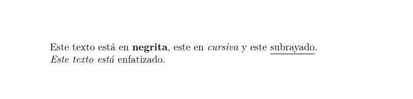
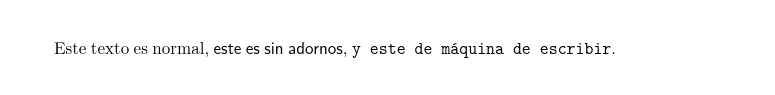
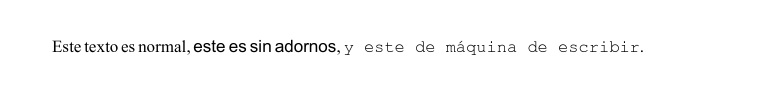
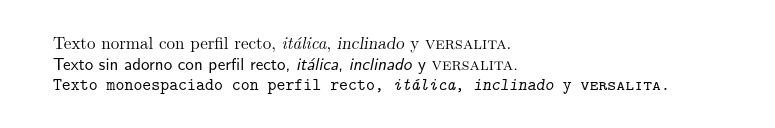
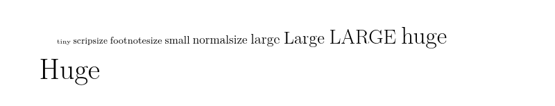

4. Formateo básico#
Existen multitud de comandos para dar formato al texto de un documento, pero en esta sección nos limitaremos a los más importantes.
4.1. Negrita, cursiva y subrayado#
Para resaltar un texto habitualmente se utiliza negrita, cursiva o subrayado. Estos formatos se aplican con los siguientes comandos:
\textbf{...}: Pone el texto en negrita.\textit{...}: Pone el texto en cursiva o itálica.\emph{...}: Enfatiza el texto cambiando de estilo (si estamos en un entorno de cursiva pasa a normal y si estamos en un entorno de texto normal pasa a cursiva).\underline{...}: Subraya el texto.
Ejemplo
% CUERPO
\begin{document}
Este texto está en \textbf{negrita}, este en \textit{cursiva} y este
\underline{subrayado}.
\textit{Este texto está \emph{enfatizado}}.
\end{document}
Salida

4.2. Familias de tipos de letra#
Existen tres tipos de letra que se activan con los siguientes comandos:
\texrm{...}: Texto normal (con serif). Es el tipo por defecto.\texsf{...}: Texto sin adornos (sin serif)\texttt{...}: Texto de máquina de escribir o monoespaciado (caracteres con la misma anchura).
Ejemplo
% CUERPO
\begin{document}
Este texto es normal, \textsf{este es sin adornos}, \texttt{y este de máquina de escribir}.
\end{document}
Salida

En el preámbulo del documento se puede seleccionar la fuente a utilizar para cada uno de ellos, especialmente con el paquete fontspec para compilar con xelatex. Para ello se utilizan los siguientes comandos:
\setromanfont{Fuente normal}: Establece la fuente para el tipo de letra normal.\setsansfont{Fuente sin adorno}: Establece la fuente para el tipo de letra sin adorno.\setmonofont{Fuente monoespaciada}: Establece la fuente para el tipo de letra monoespaciado.
Advertencia
Las fuentes utilizadas en un documento deben estar previamente instaladas en el sistema operativo donde se compile el documento.
Ejemplo
% PREÁMBULO
\usepackage{fontspec}
\setromanfont{Times New Roman}
\setsansfont{Arial}
\setmonofont{Courier New}
% CUERPO
\begin{document}
Este texto es normal, \textsf{este es sin adornos},
\texttt{y este de máquina de escribir}.
\end{document}
Salida

4.3. Perfiles de letra#
Para cada tipo de letra existen también varios perfiles que se activan con los siguientes comandos:
\textup{...}: Activa el perfil recto. Es el perfil por defecto.\textit{...}: Activa el perfil de letra itálica.\textsl{...}: Activa el perfil inclinado.\textsc{...}: Activa el perfil de letra versalita (mayúsculas pequeñas).
Ejemplo
% CUERPO
\begin{document}
Texto normal con perfil recto, \textit{itálica}, \textsl{inclinado} y
\textsc{versalita}.
\textsf{Texto sin adorno con perfil recto, \textit{itálica},
\textsl{inclinado} y \textsc{versalita}.}
\texttt{Texto monoespaciado con perfil recto, \textit{itálica},
\textsl{inclinado} y \textsc{versalita}.}
\end{document}
Salida

4.4. Tamaños de letra#
A diferencia de otros procesadores donde el tamaño de la fuente se indica en puntos o pixels, en \(\LaTeX\) existen 10 tamaños predefinidos que se activan con los siguientes comandos, de menor a mayor tamaño:
\tiny\scriptsize\footnotesize\small\normalsize\large\Large\LARGE\huge\Huge
Existen paquetes que permiten definir tamaños más pequeños o mayores pero no suelen ser necesarios en un documento normal.
Ejemplo
% CUERPO
\begin{document}
\tiny{tiny}
\scriptsize{scripsize}
\footnotesize{footnotesize}
\small{small}
\normalsize{normalsize}
\large{large}
\Large{Large}
\LARGE{LARGE}
\huge{huge}
\Huge{Huge}
\end{document}
Salida
